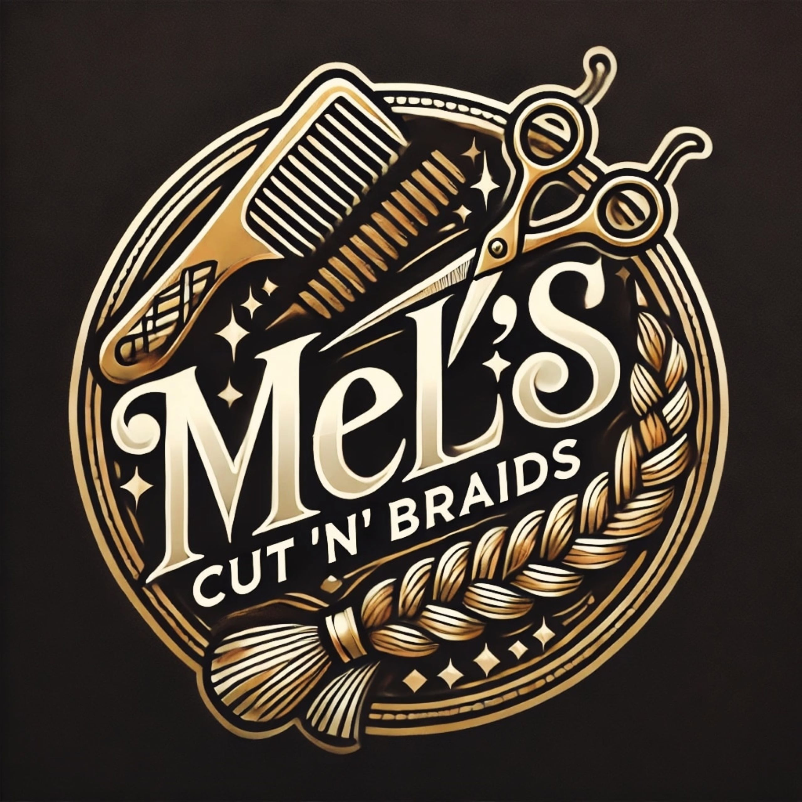
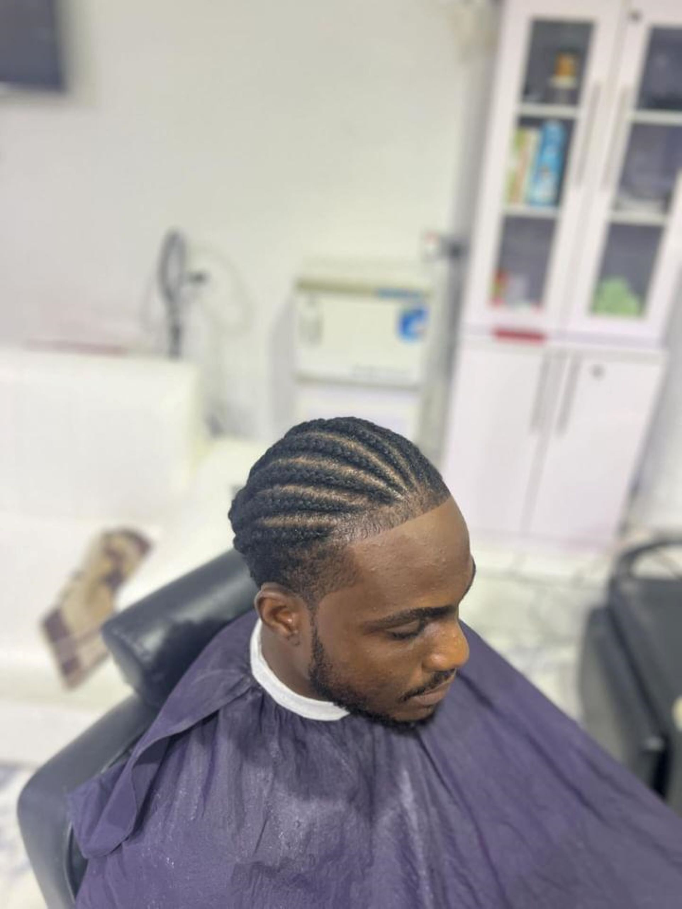
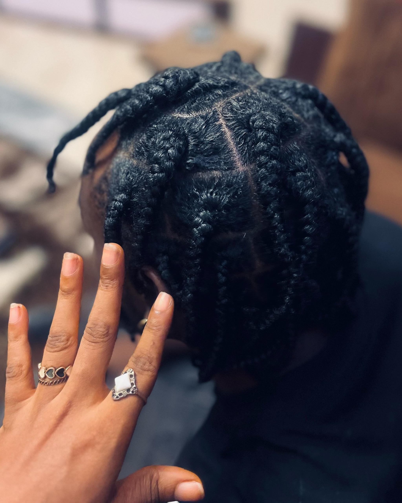
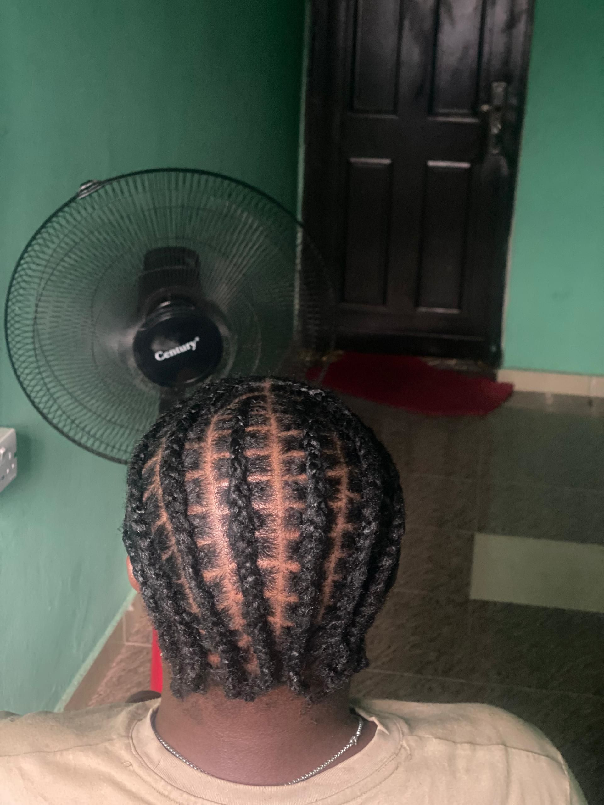
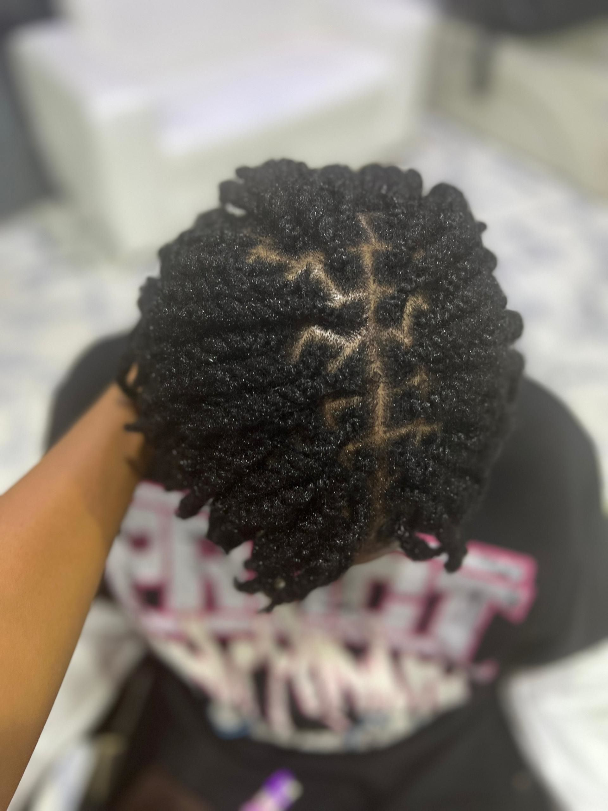
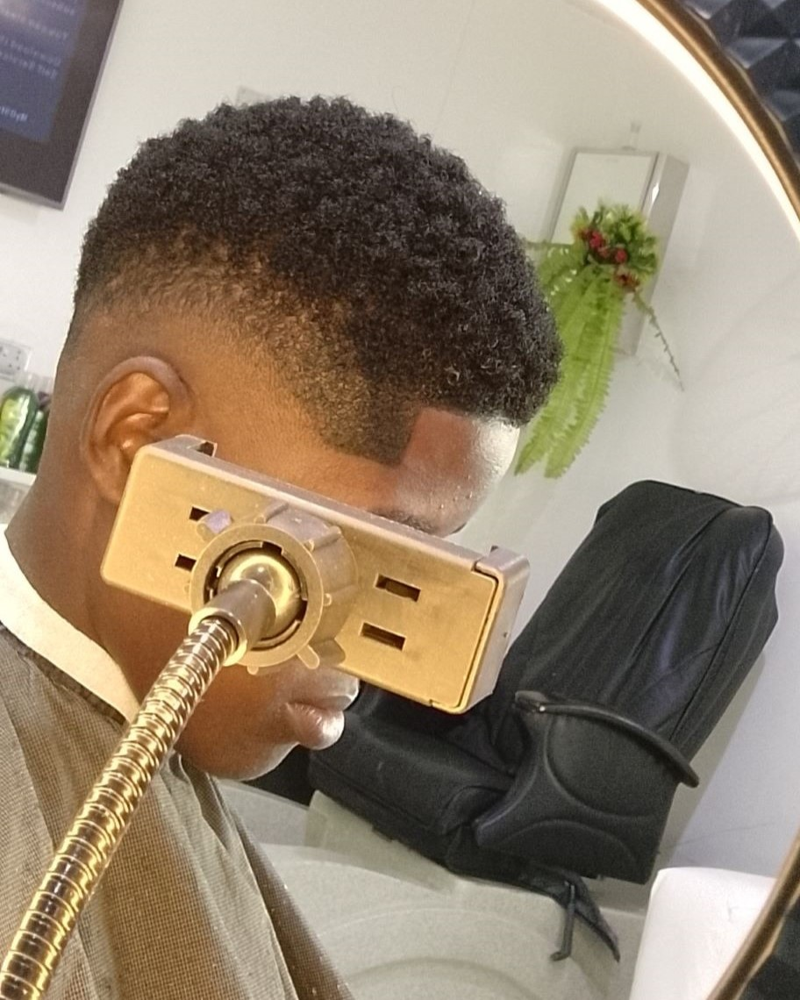
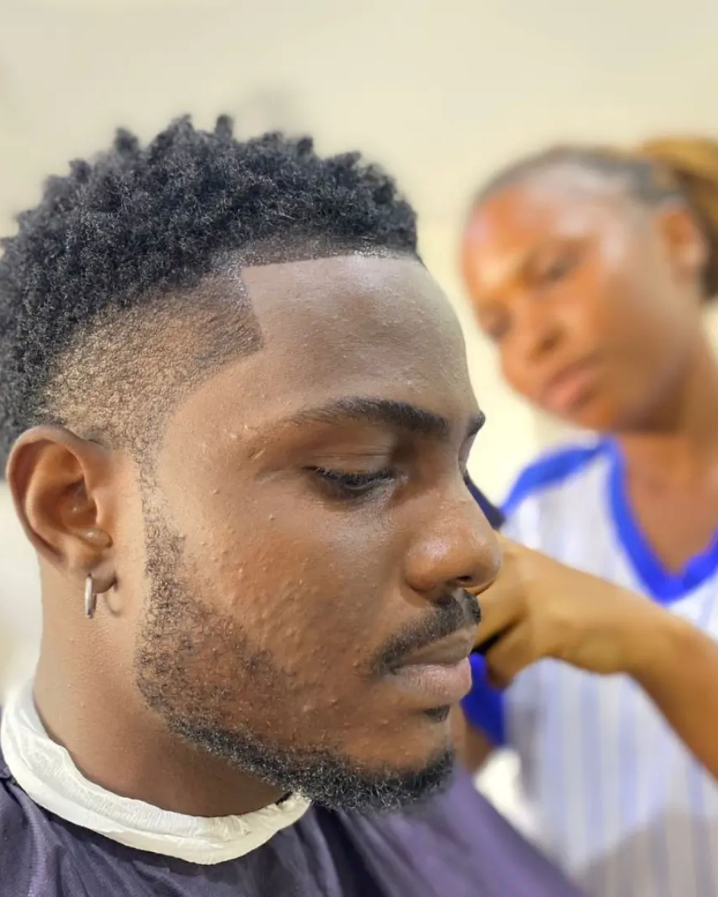

Welcome to MEL'S CUT 'N' BRAIDS

Your Go-To Spot for Stylish Hair Transformations
At Mel’s Cut 'n' Braids, we believe that great hair is the key to confidence. Whether you're looking for a fresh cut, a creative braid style, or a whole new look, we are here to make your hair dreams come true.
About Mel’s Cut 'n' Braids
At Mel’s Cut 'n' Braids, we believe that your hair is your crown — and we’re here to make it shine. Founded with a passion for creativity, self-expression, and top-tier service, Mel’s Cut 'n' Braids is more than just a salon — it’s a space where style meets confidence. Our team specializes in unisex cuts, stylish braids, professional hair treatments, and personalized haircare advice. Whether you're coming in for a fresh look, a protective style, or a total transformation, we’ve got you covered with skill, heart, and good vibes. With years of experience and a deep love for the art of hairstyling, we stay updated with the latest trends while honoring the timeless classics. Every appointment is a chance to bring out the best version of YOU. Your style, your rules — and we’re honored to be a part of your journey
Our Services






Why Choose Us?
Here’s why you’ll love us:
Experienced Stylists: With over 5 years of professional experience, we understand the art of hair styling and the importance of listening to our clients.
Personalized Attention: We take the time to understand your style goals and ensure you leave looking and feeling your best.
Quality Products: We use only top-quality products to keep your hair healthy and vibrant.
Trendy Styles: Always up-to-date with the latest hair trends, we offer the styles you want and love.
Ready for a new look? Contact us now to schedule your next appointment and let’s create the perfect style for you!